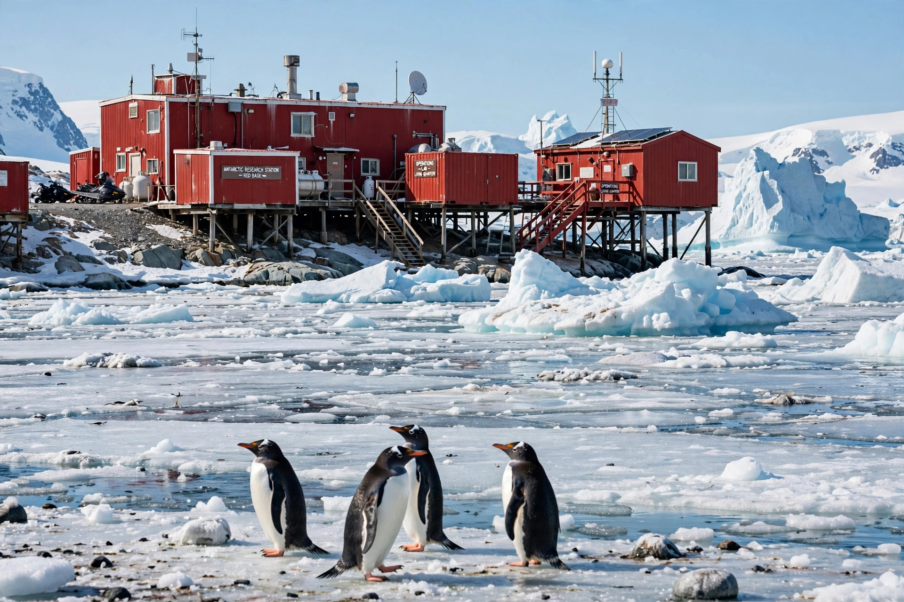

[Image placeholder: A research station on the Antarctic coast]The **Antarctic** is the region around Earth's South Pole, opposite the Arctic in the north. It comprises the continent of Antarctica — the coldest, driest, windiest and highest continent, averaging about 2,500 m elevation under an ice sheet holding roughly 60% of the world's fresh water — and the surrounding Southern Ocean south of the Antarctic Convergence.
Antarctica has no permanent human population; about 1,000–5,000 researchers staff stations such as McMurdo, Amundsen–Scott (at the Pole itself) and Vostok, where in 1983 the lowest natural temperature on Earth was recorded: −89.2 °C. The Antarctic Treaty (1959, 56 parties) demilitarises the continent, guarantees scientific freedom, and freezes territorial claims by seven claimant states. The ozone hole over Antarctica, discovered in 1985, prompted the Montreal Protocol; today, the stability of the West Antarctic Ice Sheet and its 'doomsday glacier', Thwaites, is a central climate concern.
Despite the cold, Antarctic waters are among Earth's most productive (krill-based food webs feeding whales, seals and penguins — emperor and Adélie colonies breed on sea ice), and microbes survive in subglacial lakes such as Vostok and Enceladus-like Lake Mercer.